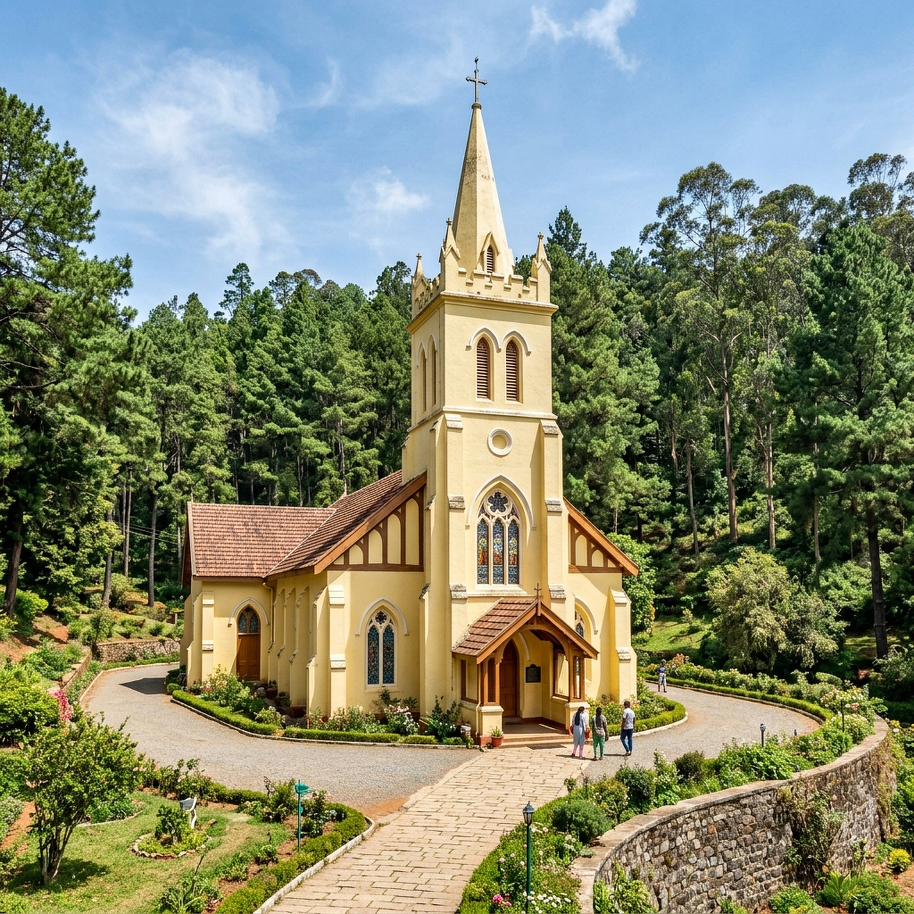
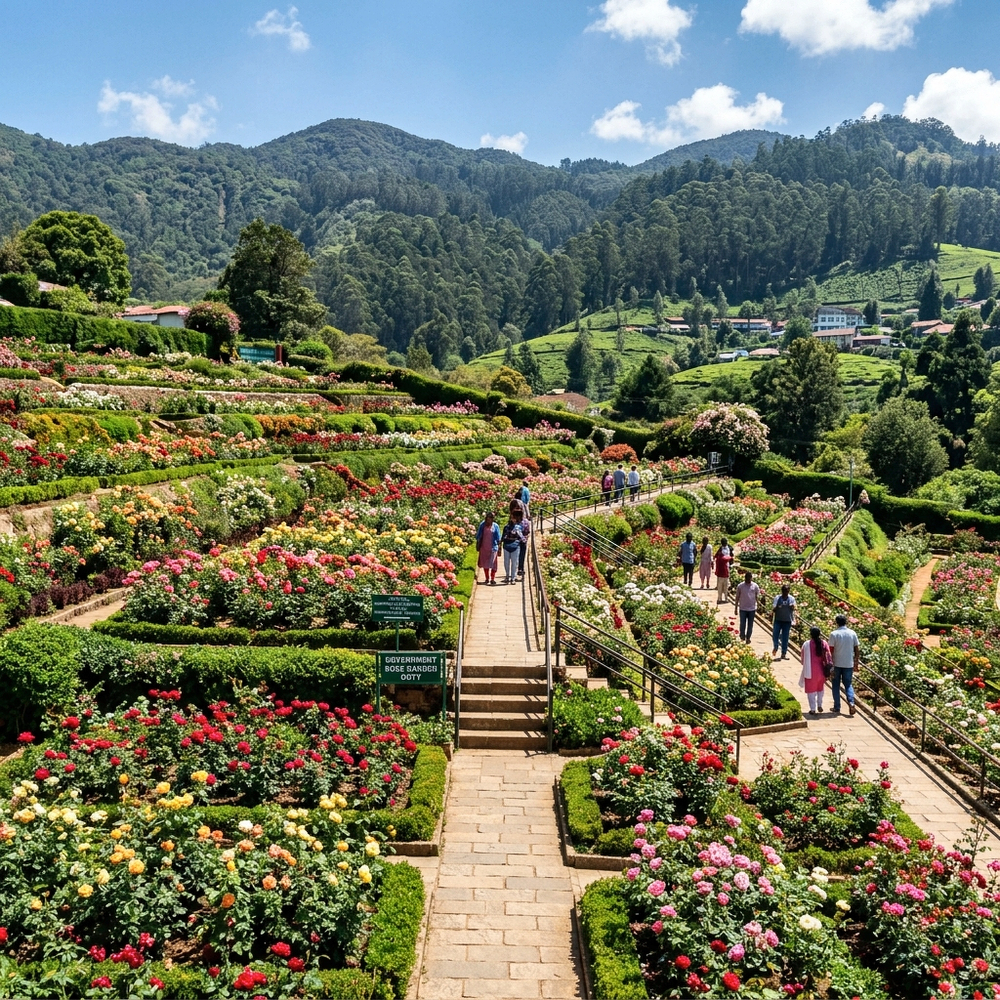
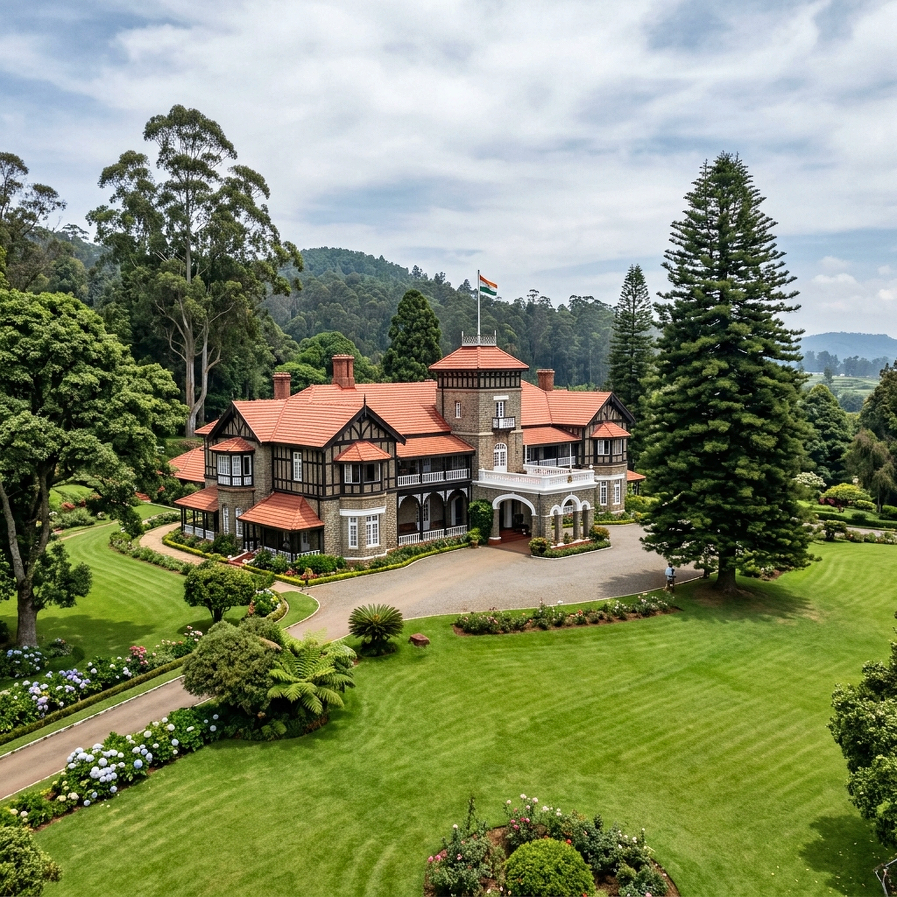
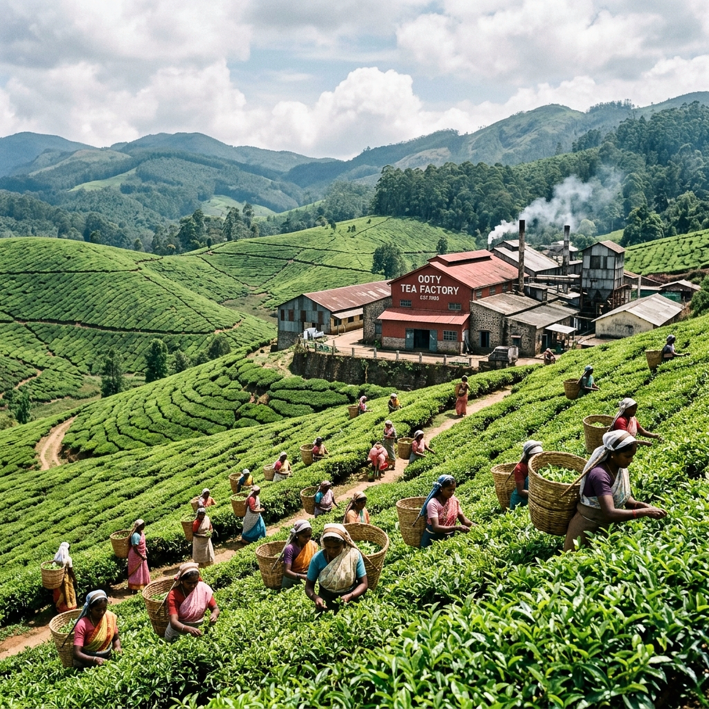
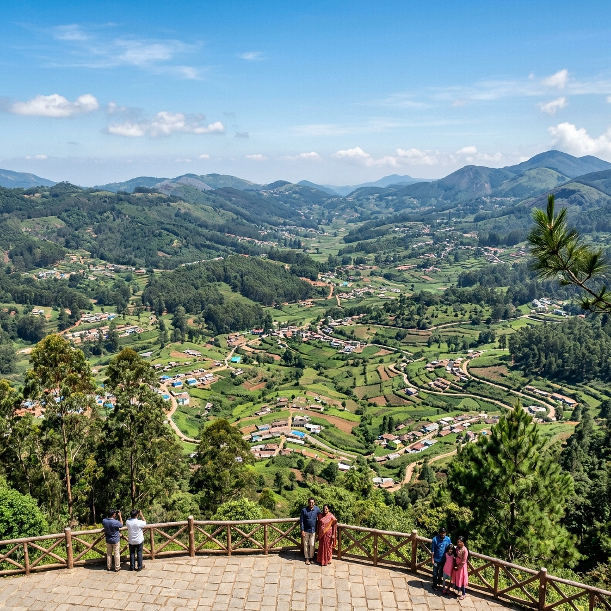
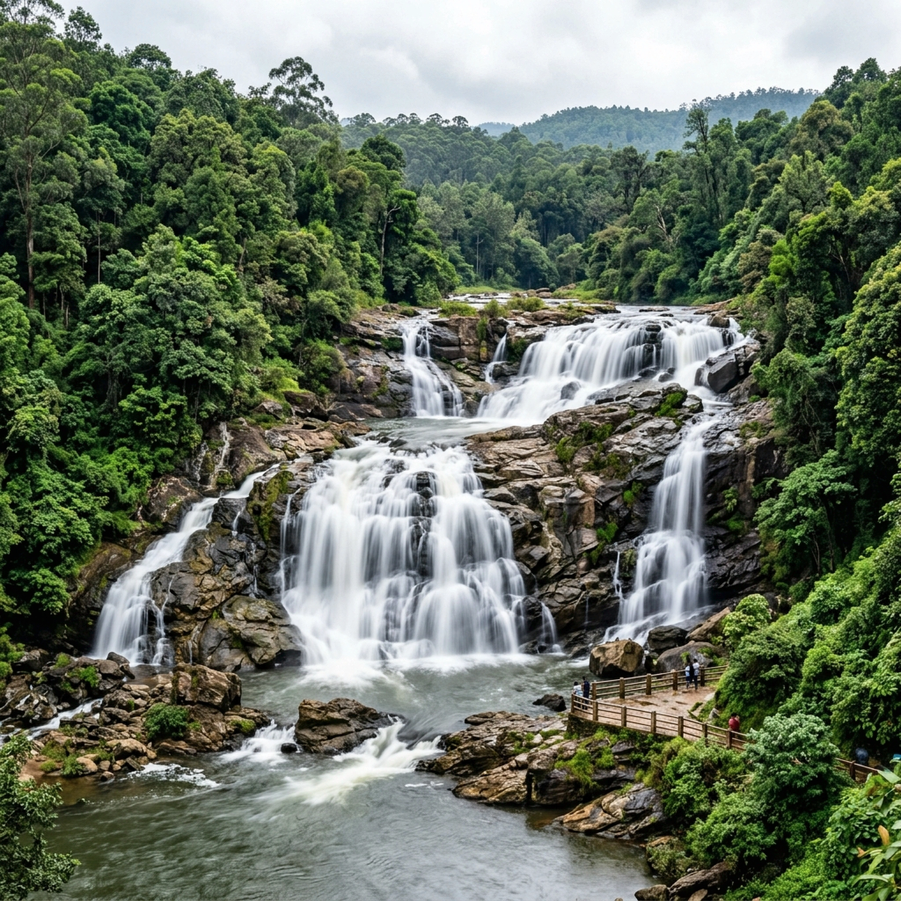
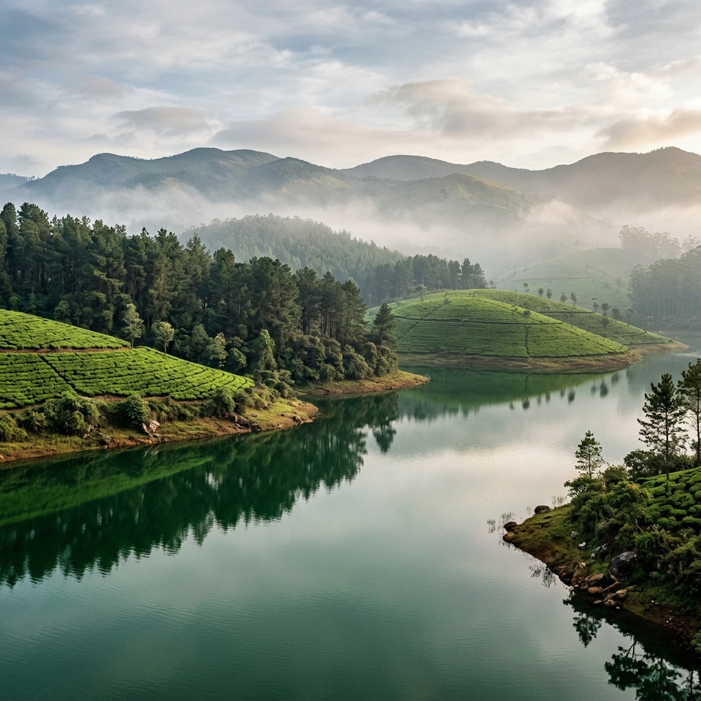
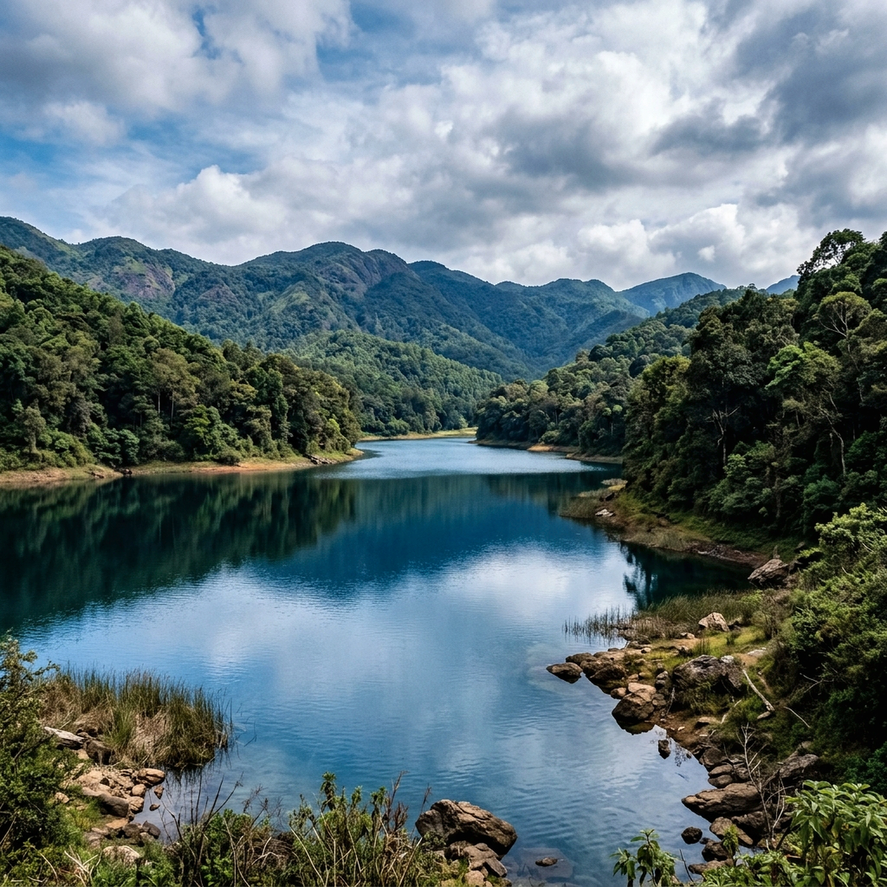

Local Sightseeing Guide
Explore Ooty
All of the Queen of Hill Stations is easily reachable from your peaceful base at The Groot.
All of the Queen of Hill Stations is easily reachable from your peaceful base at The Groot.
Sitting at 2,240 metres elevation, Ooty (Udhagamandalam) features rolling emerald plantations, heritage colonial architecture, serene lakes, and cool mountain breezes. Here are the top nearby attractions to visit while staying at The Groot:

A 55-acre terraced garden established in 1848, featuring thousands of exotic floral species and a 20-million-year-old fossilized tree trunk.

Historic 19th-century church with magnificent stained-glass windows and massive timber beams hauled from Tipu Sultan's island palace.

India's largest rose garden with over 20,000 varieties across five curved terraces, creating a vibrant sea of fragrance and color.

The stately summer residence of the Governor of Tamil Nadu, built in 1877, perched above pristine landscaped lawns and gardens.

An artificial 65-acre lake built in 1824, ideal for motor, row, and pedal boating framed by eucalyptus groves.

The highest summit in the Nilgiris at 2,637 metres elevation. Offers panoramic telescope views across the mist-shrouded mountain ranges.

Witness the full tea-making process from fresh leaf to finished blend, complete with hot tasting samples and freshly ground spices.

Known as the 'Switzerland of Nilgiris', this vast lush valley extends between Ooty and Coonoor, dotted with quaint hillside settlements.

Sacred river cascades over stepped boulders into forest pools, featuring speed-boat cruises on the pristine Pykara reservoir nearby.

A tranquil, untouched turquoise lake located in the Silent Valley region, famous for birds, pine forests, and serene solitude.

Dense shola forests, crystal-clear water, and blossoming rhododendrons make this protected sanctuary one of the most stunning in South India.
Book your stay at The Groot and explore all these magnificent Nilgiri destinations with ease.